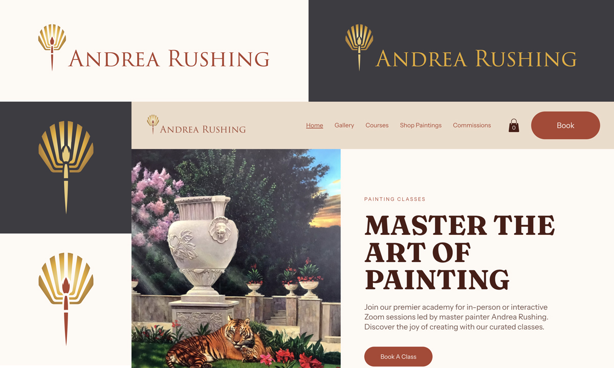

Transforming Local Brands
How a complete brand refresh helped a local artist increase customer engagement and class enrollment

Problem
The challenge we needed to solve
Andrea Rushing is a celebrated San Diego-based artist whose work has graced galleries and museum collections across the country — a decades-long career marked by creative depth, technical mastery, and a distinguished body of work that speaks for itself. Alongside his fine art practice, Andrea has built and sustained the San Diego Art Academy, a thriving institution that has grown almost entirely through the power of personal referral and community reputation.
Yet for all the prestige Andrea had earned, his digital presence told a different story. His existing website and brand identity failed to capture the caliber of the artist behind them — underselling his experience, understating his national recognition, and leaving prospective students with no clear sense of the extraordinary creative mentor they were about to encounter. In a competitive landscape where first impressions are increasingly made online, Andrea's digital footprint was not positioned to convert curiosity into enrollment, nor to extend his reach beyond the loyal network he had spent years cultivating.
The opportunity was clear: Andrea's brand needed to catch up to his legacy — and then open the door to the next chapter of it.
Approach
Our strategic solution
Andrea Rushing had the reputation — he just needed a brand to match it. We delivered a complete transformation across four fronts.
We started with a logo refresh and visual identity system that finally captured his stature: refined, authoritative, and as warm as his studio. A brand positioning and messaging framework gave Andrea a clear, compelling voice — one that speaks equally to the curious beginner and the serious student, always driving toward a booking.
The website overhaul at sandiegoartacademy.com became the centerpiece. Clean, professional, and built for conversion, the new site showcases his full class offerings — in-person, private, and live Zoom — with seamless online booking. It also unlocks new revenue through a dedicated Shop Paintings section and a streamlined Commission Requests page, turning a passive brochure into an active business tool.
Finally, a library of social content templates and a coordinated launch campaign gave Andrea a consistent, polished presence across platforms — and reintroduced him to the world with the fanfare he'd long deserved.
- Brand positioning and messaging framework
- Logo refresh and visual identity system
- Dedicated online gallery
- Dedicated e-commerce page for original / prints sales with commissions request page
- Online & in-person course schedules & bookings pages
- Social content templates and launch campaign
Result
The measurable impact
The brand transformation gave Andrea's business what word-of-mouth alone never could: a professional, always-on presence that built credibility before a single conversation took place. By aligning his visual identity, website, and social content into one cohesive system, every touchpoint worked together to convert awareness into action — turning curious visitors into enrolled students and passive followers into an engaged creative community.